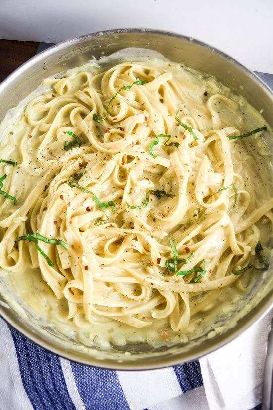

Creamy Garlic Pasta

Recipe Description
This dairy free pasta is a vegan alternative to fettucine alfredo.
Ingrediants
- Olive oil - 1/2 tbs
- Garlic minced - 4 gloves
- Shallot finely chopped - 1 shallot
- Vegetable broth - 2 cups
- Unsweetened non-dairy milk - 1 1/2 cups
- Salt - 1 tsp.
- Dry fettuccine - 8 oz
- Black pepper, dried oregano, red pepper flakes - to taste
- Fresh basil chopped (optional garnish)
Instructions
- Heat olive oil in large skillet on medium high
- Add garlic, shallot and salt, stir. Cook until
garlic and shallot are soft but no browned (about
2 minutes).
- Add vegetable broth, milk, salt and stir. Next add
the pasta. Gentrly prod to ake sure all pasta is
submerged in the liquid
- Bring to a boil, the reduce to a simmer. Gentrly
stir to keep pasta from sticking. Cook for 20 minutes
or until sauce has desired thickness.
This recipe is from Yup.. It's Vegan
Back to Recipe List